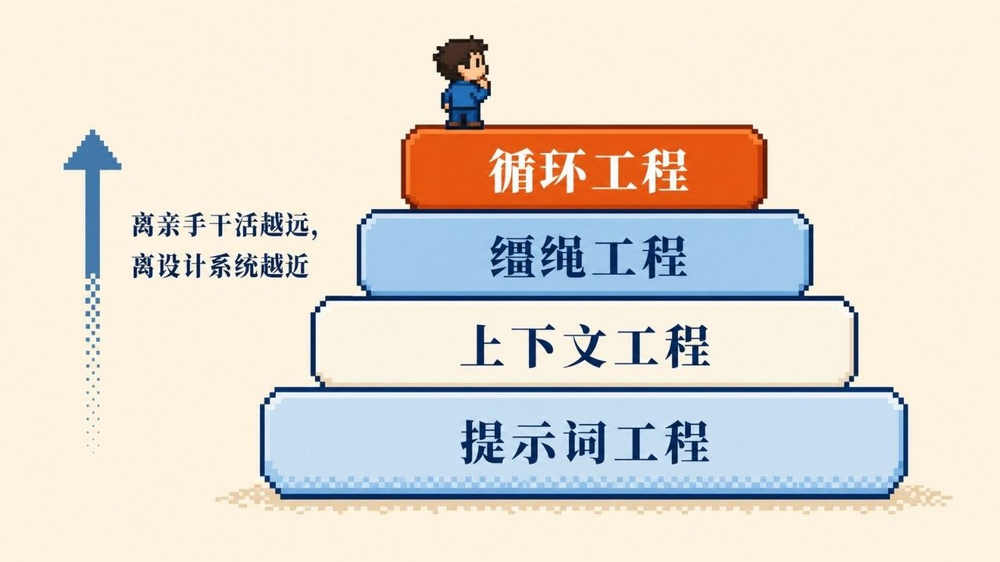

GRAPH PAPER / LOOP ENGINEERING
alchaincyf / loop-engineering-orange-book · orange book series
从提示词到循环工程
这本橙皮书把一件事讲得很直白：不要继续手动陪 Agent 一轮轮跑，而是设计一个系统，让它自己发现、分发、检查、记录，并继续前进。它是中英双语、免费 PDF 的通俗指南，也是一份把 Loop Engineering 讲清楚的入门地图。
loop engineering
agentic engineering
claude code
codex
automation
memory
source figureembedded evidence

用户提供的像素图谱：提示词工程 → 上下文工程 → 缰绳工程 → 循环工程
一句话结论：离亲手干活越远，离设计系统越近。它把“会写 prompt”升级成“会设计循环”。
loop mapcontrol flow
01 · 这本书讲什么plain-language guide
不是再教你写更好的 prompt
这本书的中心不是“提示词技巧”，而是把你的角色从“逐轮喂 Agent 的人”升级成“设计循环的人”。它强调：系统的外层循环，比单句 prompt 更重要。
它把外层系统拆成可执行部件
书里把循环工程放在更高一层，围绕自动化、工作树、技能、插件 / 连接器、子代理与记忆，讲清一个系统怎么自己跑起来、自己收敛、自己复盘。
02 · 四层演进图from prompt to loop
01
提示词工程
最直接的人工交互：你写 prompt，模型给输出。
手动驱动
02
上下文工程
不只改一句话，而是管理背景、资料和检索到的上下文。
信息供给
03
缰绳工程
通过约束、护栏和流程控制，让 Agent 不偏航。
控制与约束
04
循环工程
把目标、验证、记录、下一步都编进系统，形成自动闭环。
系统自己推进
03 · 书里的骨架4 parts / 9 sections
| Part | 主题 | 关键词 |
|---|---|---|
| 1 | What It Is | 定义、起源、prompt → context → harness → loop 的层级关系 |
| 2 | How It Turns | 五个动作、六个构件、为什么 AI 不能给自己写的代码打分 |
| 3 | Where It Runs, What It Costs | Addy 的晨间分流、Stripe Minions、调度现实与四种成本 |
| 4 | How You Start | 怎么保持“工程师”角色，以及如何今天就开始做第一个 loop |
04 · 为什么值得看who this is for
适合谁
- 已经在用 Claude Code / Codex / Cursor 的开发者
- 想从 prompt 驱动升级到系统驱动的 AI 用户
- 想理解“Loop Engineering”为什么会在 2026 年爆起来的人
你会学到什么
- 怎么把自动化、分流、检查、记录串成闭环
- 为什么 token 成本与质量护栏是核心问题
- 怎样把“我来提示”变成“系统来推进”
它的边界
它不是单一工具教程，而是围绕 Agent 外层系统的通俗框架；PDF 免费、中文 / 英文双语，适合作为“外层循环”入门读物。
05 · 来源与证据github + screenshot
Repo source
GitHub：alchaincyf/loop-engineering-orange-book
README 显示：中文 / English PDF、免费下载、9 sections across 4 parts、围绕 Loop Engineering 的通俗说明。
README 显示：中文 / English PDF、免费下载、9 sections across 4 parts、围绕 Loop Engineering 的通俗说明。
Image takeaway
图像中的四层阶梯把书的核心主张压缩得很清楚：从提示词工程一路向上，最后落到“设计系统”，而不是“亲手干活”。